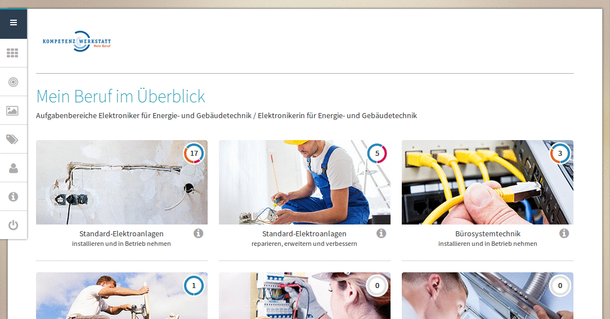
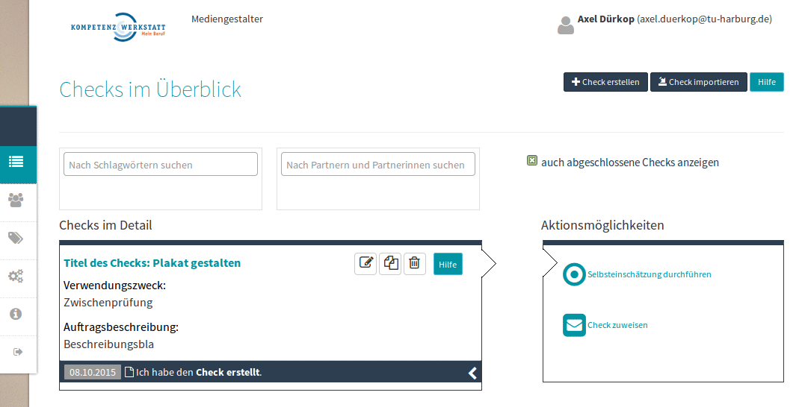
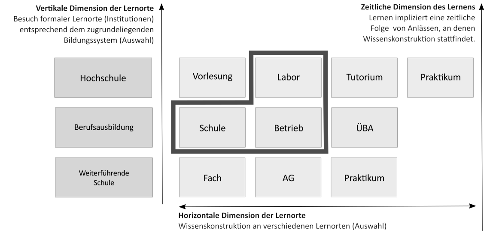
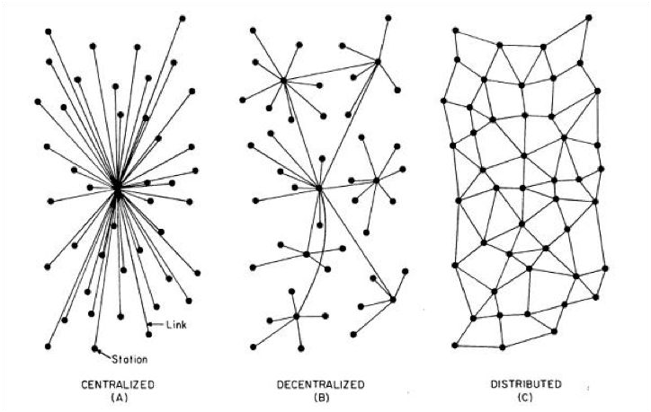
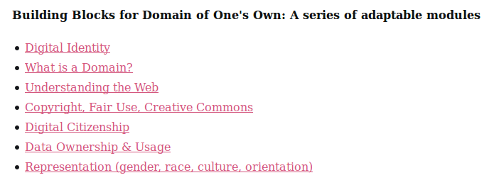

Überlegungen zu einem
E-Portfolio für das lebensbegleitende Lernen
Axel Dürkop, MA, iTBH, TU Hamburg
ÖZBF-Kongress, Salzburg, 21. Oktober 2016
Agenda
- Zur Person: Vorstellung und Hintergrund
- Gedanken zum Konzept
- Gedanken zur Didaktik
- Gedanken zur Technik
- Zusammenfassende Betrachtung und Diskussion
Vorstellung und Hintergrund
Zur Person
- Studium der Philosophie und Literaturwissenschaft
- zehn Jahre Arbeit als Regisseur, Darsteller und Musiker an deutschen Stadt- und Staatstheatern
- Autodidakt im Bereich der Informationstechnologie
- mehrere Jahre freiberuflicher Dozent im Bereich Webtechnologien sowie in der Erwerbslosenförderung und -weiterbildung
- wiss. Mitarbeiter und Dozent am Institut für Technische Bildung und Hochschuldidaktik (iTBH) an der TU Hamburg unter Leitung von Prof. Dr. Sönke Knutzen
- laufende Promotion zum Thema Offenheit in der digital gestützten Lehre
Erfahrung mit E-Portfolios
- Mitglied (Programmierer) im Entwicklungsteam des
- Ausbildungsportfolio der Kompetenzwerkstatt 2.0,
(Dürkop & Knutzen, 2014; Howe & Knutzen, 2007) - Kompetenzcheck, Browsertool zur Kompetenzfeststellung und -entwicklung
- Betreuung der Weiter- bzw. Neuentwicklung
- Ausbildungsportfolio der Kompetenzwerkstatt 2.0,
Das Ausbildungsportfolio
 Abbildung: Startseite des Ausbildungsportfolios
Der Kompetenzcheck
 Abbildung: Startseite des Kompetenzchecks
Gedanken zum Konzept
Wissen und Kompetenzen werden im Laufe eines Lebens erworben
- an unterschiedlichen Orten
- mit variablem zeitlichem Abstand
- in unterschiedlicher Form (theoretisch/praktisch)
Dürkop, 2015
- Wissens- und Kompetenzerwerb im Rahmen formaler Bildungszusammenhänge
 Abbildung: E-Portfolios im Kontext lebensbegleitenden Lernens. Quelle: Dürkop, 2015
- Integration informell erworbener Kompetenzen
Zusammenschau im Ausbildungsportfolio
Abbildung: Zusammenschau von E-Portfolioeinträgen aus der "Vogelperspektive". Quelle: Ausbildungsportfolio
Strukturierungsfunktion
Lernortkooperation im Kopf kann helfen, Wissen und Kompetenzen - erworben an unterschiedlichen Orten im Laufe der Zeit - zusammenzuschauen.
Elsholz & Knutzen, 2009; Dürkop, 2015
Kernelemente von Kompetenzentwicklung
Theoretische Fundierung des eProfilPASS:
- Biografische Arbeit
- Tätigkeitsanalyse
- Belegen von Kompetenzen
- Formulieren von Zielen und Festlegen nächster Schritte
- Auseinandersetzung mit Werten
Pielorz & Westebbe, 2014, S. 102 f.
Anforderungen für E-Portfolios:
- biografisch und subjektorientiert
- auf die Fachlichkeit bezogen
- begleitet in der Selbstreflexion
- durch unabhängige Institutionen unterstützt
- anschlussfähig in der Folge berufsbiografischer Abschnitte
- Selbstmarketing
- Erstellung von Kompetenzprofilen
Elsholz, 2014; Thomas, 2014
Gedanken zur Didaktik
- (E-)Portfolioarbeit muss behutsam eingeführt werden.
- Sie kostet viel Selbstdisziplin, bevor Mehrwerte sichtbar werden.
- Reflektieren will gelernt sein.
- (E-)Portfolioarbeit muss wertgeschätzt werden.
- Für (E-)Portfolioarbeit muss im Unterricht (viel) Zeit eingeräumt werden.
(E-)Portfolioarbeit kann nicht auf den Lernenden abgewälzt werden.
Der Lehrende/Beratende behält eine wichtige Rolle bei der Reflexionsarbeit.
Eine Lösung besteht folglich nicht in der IT allein. Vielmehr ist E-Portfolioarbeit ein komplexes sozio-technisches System mit mehreren Akteur_innen.
"[...] trägt die Verantwortung dafür, dass 'biografisches Material' in ausreichender Fülle 'zum Vorschein' kommt."
eProfilPASS, Pielorz & Westebbe, 2014, S. 103
Gedanken zur Technik
E-Portfolios
"[...] any digital system supporting reflexive learning and practice by allowing a person (or an organisation) to collect, manage, and publish a selection of learning evidence in order to have one's assets recognised, accredited or plan future learning"
Ravet, 2009, S. 4
Merkmale von Tools
- ubiquitär zugänglicher Datenspeicher
- Interaktions- und Kommunikationsmedium
- Präsentationsfunktion
- Verfügungsgewalt über die Daten
- Strukturierungsfunktion
nach Thomas, 2014, S. 164
Migrationsfähigkeit von Technik und Inhalten
- schlanke Stacks für technische Systeme
- keine Monolithen, lose Kopplungen für ein PLE (Personal Learning Environment)
- Blogs, Single-User-Portfolios
- Kapselung von Texten und Artefakten in "zeitlosen" Formaten und Containern
- XML und Markdown
- Trennung von Inhalten und Systemen
- Definition einheitlicher Schnittstellen für Import und Export
- offen für einschneidende Innovationen
- gestern das Smartphone - und morgen?
Nachhaltigkeit
Abbildung: https://www.eprofilpass.de/, 20.10.2016
- Beispiel: Ausbildungsportfolio - Weiterentwicklung noch nicht verstetigt
- Welches Geschäftsmodell für lebensbegleitende Infrastrukturen?
Inspirationen und Visionen
Architekturen
- E-Portfolios: distributed statt centralized? 
Abbildung: Raval, 2016, S. 3
Domain of One's Own
- University of Mary Washington u.a.
- Allen Studierenden eine eigene Domain und Webspace  Abbildung: Homepage der UWM
- communities of practice durch Vernetzung von Blogs
IPFS und Blockchain
- IPFS: Interplanetary Filesystem für das Permanent Web
- keine Server, Datenhaltung auf dem eigenen Rechner
- Interessierte entdecken einander und duplizieren nur die notwendigen Daten
In Kombination mit Blockchain entstehen dezentrale/distribuierte Datenspeicher, deren Daten beim Nutzer liegen und kryptografisch gesichert sind.
Ist es wünschenswert für E-Portfolioarbeit, wenn das Netz nichts mehr vergisst?
Chatbots und Machine Learning
Kleist, Über die allmähliche Verfertigung der Gedanken beim Reden
- Chatbots könnte die Rolle von Molieres Reinigungskraft zukommen
- Machine Learning und Data Mining zur Analyse von Portfolioinhalten
- Wechsel des Bots von passiv zu aktiv
- Altern Chatbots mit ihren Nutzer_innen?
Können Chatbots in der Zukunft Beratende und "Reflexionshelfer_innen" ersetzen?
Diskussion
Kontakt
Axel Dürkop
Institut für Technische Bildung und Hochschuldidaktik
Am Irrgarten 3-9
21073 Hamburg
Web: Axel Dürkop
Mail: axel.duerkop@tuhh.de
Twitter: @xldrkp
GitHub: xldrkp
Referenzen
- Benet, J. (2014). IPFS - Content Addressed, Versioned, P2P File System (DRAFT 3). arXiv preprint arXiv:1407.3561. Zugriff am 19.10.2016.
- Dürkop, A. (2015). Hochschuldidaktischer Einsatz von E-Portfolios zur Zusammenschau raumzeitlich getrennter Wissenskonstruktion. In G. Kammasch & R. Dreher (Hrsg.), Wie viel (Grundlagen)Wissen braucht technische Bildung? - Wege zu technischer Bildung. Referate der 9. Ingenieurpädagogische Regionaltagung 2014 an der Universität Siegen vom 6. - 8. November 2014 (S. 86–92). Siegen.
- Dürkop, A., Elsholz, U. & Knutzen, S. (2013). Entwicklung und Einsatz eines mobilen Ausbildungsportfolios. In M. Becker, A. Grimm, A.W. Petersen & R. Schlausch (Hrsg.), Kompetenzorientierung und Strukturen gewerblich-technischer Berufsbildung (S. 367–383). Berlin: LIT Verlag Münster.
- Dürkop, A. & Knutzen, S. (2014). Das Ausbildungsportfolio der Kompetenzwerkstatt - Mein Beruf (Erwachsenenbildung und lebensbegleitendes Lernen - Forschung & Praxis). In U. Elsholz & M. Rohs (Hrsg.), E-Portfolios für das lebenslange Lernen. Konzepte und Perspektiven (1. Auflage, Band 22, S. 41–58). Bielefeld: W. Bertelsmann.
- Dürkop, A. & Klaffke, H. (2013). Kompetenzwerkstatt - Mein-Beruf. Ein berufswissenschaftliches Lehr-/Lernkonzept (Medien in der Wissenschaft). In C. Bremer & D. Krömker (Hrsg.), E-Learning zwischen Vision und Alltag (Band 64, S. 427–428). Münster.
- Elsholz, U. & Rohs, M. (2014). Herausforderungen für ein lebensbegleitendes Lernen mit E-Portfolios (Erwachsenenbildung und lebensbegleitendes Lernen - Forschung & Praxis). In U. Elsholz & M. Rohs (Hrsg.), E-Portfolios für das lebenslange Lernen. Konzepte und Perspektiven (1. Auflage, Band 22, S. 193–198). Bielefeld: W. Bertelsmann.
- Howe, F. & Knutzen, S. (2007). Die Kompetenzwerkst@tt: Ein berufswissenschaftliches E-Learning-Konzept. Göttingen: Cuvillier.
- Knauf, B., Dürkop, A. & Knutzen, S. (2014). Mobile Kompetenzerfassung zur gezielten Unterstützung von Kompetenzentwicklungsprozessen in der dualen Ausbildung (Lecture Notes in Informatics (LNI) - Proceedings). DeLFI 2014 – Die 12. e-Learning Fachtagung Informatik der Gesellschaft für Informatik e.V. (Band P-233, S. 139–144). Bonn: Köllen Druck+Verlag GmbH.
- Munz, C. (2005). Berufsbiografie selbst gestalten. Wie sich Komptenzen für die Berufslaufbahn entwickeln lassen. Bielefeld: W. Bertelsmann Verlag.
- Pielorz, M. & Westebbe, G. (2014). eProfilPASS (ePP) - ein Instrument zur Sichtbarmachung von non-formal und informell erworbenen Kompetenzen (Erwachsenenbildung und lebensbegleitendes Lernen - Forschung & Praxis). In U. Elsholz & M. Rohs (Hrsg.), E-Portfolios für das lebenslange Lernen. Konzepte und Perspektiven (1. Auflage, Band 22, S. 93–114). Bielefeld: W. Bertelsmann.
- Raval, S. (2016). Decentralized Applications. O'Reilly.
- Ravet, S. (2009). ePortfolio a European Perspective. A report on ePortfolio readiness and state of the art technology and practice.
- Thomas, M. (2014). E-Portfolios als Navigationshilfe in der Erwerbsbiografie (Erwachsenenbildung und lebensbegleitendes Lernen - Forschung & Praxis). In U. Elsholz & M. Rohs (Hrsg.), E-Portfolios für das lebenslange Lernen. Konzepte und Perspektiven (1. Auflage, Band 22, S. 163–176). Bielefeld: W. Bertelsmann.
- Watters, A. (2016, August 23). A Domain of One’s Own in a Post-Ownership Society. Hack Education. Zugriff am 25.8.2016.
- Für eine Liste von Firmen/Institutionen, die ChatBots einsetzen, vgl. https://www.chatbots.org/country/at
Lizenz

Dieses Werk ist lizenziert unter einer Creative Commons Namensnennung 4.0 International Lizenz.